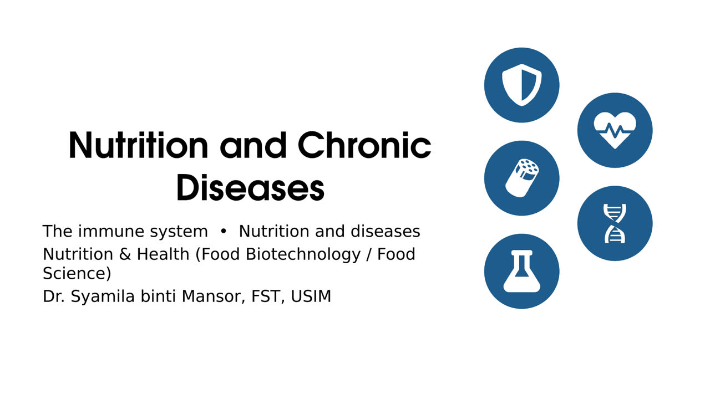

Nutrition & Health · Food Biotechnology / Food Science · USIM
Welcome to this week's online lecture. It covers the immune system and nutrition and diseases: cardiovascular disease, hypertension, type 2 diabetes and cancer. All values follow the Recommended Nutrient Intakes for Malaysia (RNI 2017), with background from Sizer & Whitney, Nutrition: Concepts and Controversies, Chapter 11.
Video, 9 min · then Activity 1: Defend the Body, a pathogen-wave quiz with three shields.
Start here 2Video, 10 min · then Activity 2: Risk Factor Rush, a timed sorting game.
Locked 3Video, 5 min · then Activity 3: Reformulation Lab, where you redesign a food product.
LockedBrowse all 39 slides at your own pace.
Key messages, practice questions with answers, and references.
Finish all three videos and activities, then get your slip and submit a screenshot for attendance.
LockedThis lecture aims to:
By the end, you should be able to:
Your video progress is remembered in this browser only, so use the same device and browser. Game answers are not saved or sent anywhere; copy your group summary into the GOALS forum before you close the page. When you finish everything, collect your attendance slip.
Lecture by Dr. Syamila binti Mansor, Faculty of Science and Technology, USIM.
Attendance
Your attendance for this online lecture is recorded from this slip. It unlocks when you have watched all three videos and finished all three activities on this device.
Type your name and matric number exactly as they appear in your student records.
Nutrition & Health · USIM · Online lecture attendance
Check code
Lecture slides

Tip: use the left and right arrow keys. QR codes on the slides point back to this website.
Summary and self-check
Every line of defence needs adequate protein, vitamins A, C, D and E, zinc and iron. Meet the RNI; more is not better. RNI 2017 notes that zinc at 100–300 mg/day reduces immune function.
Malnutrition weakens immunity, and infection worsens malnutrition by raising needs and lowering intake and absorption.
Chronic, low-grade inflammation links the immune system to atherosclerosis, type 2 diabetes and some cancers.
Shared across CVD, hypertension, diabetes and cancer. Age, sex and genes cannot change; diet, activity, smoking and weight can.
Fat 25–30% of total energy intake (TEI); saturated fat < 10% TEI; free sugars ≤ 10% TEI; fibre 20–30 g/day; sodium AI 1500 mg/day and UL 2300 mg/day; potassium AI 4.7 g/day.
Reformulation (less salt, better fats, less sugar, more fibre) and processing control (less acrylamide and charring) lower risk for whole populations.
Vitamin A maintains epithelial tissues and mucus-producing goblet cells. In deficiency these barriers flatten, dry out and make less mucus, so pathogens enter more easily. Immune cell function is also impaired.
Fever and tissue repair raise nutrient needs, while poor appetite lowers intake and diarrhoea reduces absorption. Nutrient stores fall, so malnutrition worsens and immunity weakens further.
Non-modifiable: age, family history. Modifiable: smoking, sodium intake.
LDL carries cholesterol to tissues; when it enters the artery wall and is oxidised, macrophages take it up and form plaque. HDL carries cholesterol back to the liver for disposal, so low HDL means less removal.
900 ÷ 2300 × 100 ≈ 39% of the RNI 2017 Tolerable Upper Intake Level in a single meal.
Activity 1 · Immune system and nutrition
Step 1 · Watch video Section 1: The immune system
Not watchedWatch to the end to unlock the activity. You cannot skip ahead, but you can go back to replay any part. Captions (CC) are available.
Step 2 · Activity
🔒 This activity unlocks when you finish the Section 1 video.
Each question is a pathogen wave. A correct answer blocks it (+100, with a streak bonus). A wrong answer or running out of time costs one shield. You have 3 shields and 25 seconds per wave.
Activity 2 · Risk factors for chronic diseases
Step 1 · Watch video Section 2: Risk factors, CVD, hypertension and diabetes
Not watchedFinish the Section 1 video first. Section 2 unlocks after it.
Watch to the end to unlock the activity. You cannot skip ahead, but you can go back to replay any part. Captions (CC) are available.
Step 2 · Activity
🔒 This activity unlocks when you finish the Section 2 video.
Round 1: can a person change this risk factor? Tap Modifiable or Non-modifiable.
Round 2: which chronic disease is this dietary factor most strongly linked to?
+10 for each correct answer, double points after a streak of 3, −5 for a wrong answer. Each round lasts 60 seconds.
Round 1 complete
Notice that blood pressure, LDL cholesterol and blood glucose are not on the list. They are risk factors too, and diet and activity can change them.
Final score
Activity 3 · Food science for chronic disease prevention
Step 1 · Watch video Section 3: Cancer, processing, herbs and genes
Not watchedFinish the Section 2 video first. Section 3 unlocks after it.
Watch to the end to unlock the activity. You cannot skip ahead, but you can go back to replay any part. Captions (CC) are available.
Step 2 · Activity
🔒 This activity unlocks when you finish the Section 3 video.
Pick a product. Use the levers to bring one serving within the targets, and keep the sensory acceptance score at 70 or more. Your R&D budget covers only two technologies, so choose carefully.
| Per serving | Now | Target |
|---|
How the targets are set. One serving is treated as one-quarter of a day's eating (about 500 kcal of a 2000 kcal day). Sodium: ≤ 575 mg, one-quarter of the RNI 2017 Tolerable Upper Intake Level (UL) of 2300 mg/day. Saturated fat: < 10% of total energy intake (TEI), so ≤ 5.5 g. Free sugars: ≤ 10% TEI, so ≤ 12.5 g. Dietary fibre: 20–30 g/day, so ≥ 5 g. Product values are illustrative teaching figures, not data for real brands.